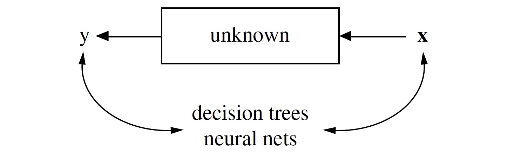

R in Transportation Safety Research: Case Studies
Subasish Das
Associate Transportation Researcher
Texas A&M Transportation Institute (TTI)
February 7, 2017
About me
- Completed MS in Civil Engg. (Transportation maj.) from UL Lafayette in 2012. Completed MS in Statistics [Non-thesis] in Summer 2015. Completed PhD in Civil Engg. (Transportation maj.) in Summer 2015.
- Started working at TTI from August 2015 as an Associate Transportation Researcher.
Highlights on Today's Presentation
- Why R?
- R in Statistical Modeling and Machine Learning
- Hands on Coding
Outline
- Basics of R
- Concepts of Safety Modeling
- Statistics vs. Machine Learning
- R for Statistical Modeling
- R for Machine Learning
- Case Studies
Why R?
- Over 10,000 packages. Handy in both cultures.
- Best tool for reproducible research and literate programming.
- Efficient in big data management.
- Pitfalls: R is good for data analytic problems but it is not for advanced programmers.
Sample R Code
### SET WORKING DIRECTORY
setwd("/Users/subasishdas1/....")
### READ THE DATA
mydata1 <- read.csv("data01.csv")
### LOOK AT THE DATA
dim(mydata1)
[1] 1742 6
head(mydata1)
Vis_Score OPSPEED RCISLDWTH2 RCIMEDWDTH SKIDNUMBER freq
1 5 38 5 15 69 1
2 4 44 7 33 53 1
3 6 42 11 25 56 1
4 9 25 18 23 72 1
5 9 36 6 42 59 1
6 6 38 11 35 67 1
str(mydata1)
str(mydata1)
'data.frame': 1742 obs. of 6 variables:
$ Vis_Score : int 5 4 6 9 9 6 9 8 9 4 ...
$ OPSPEED : int 38 44 42 25 36 38 21 4 23 16 ...
$ RCISLDWTH2: int 5 7 11 18 6 11 4 8 13 17 ...
$ RCIMEDWDTH: int 15 33 25 23 42 35 19 27 20 35 ...
$ SKIDNUMBER: int 69 53 56 72 59 67 62 63 78 55 ...
$ freq : int 1 1 1 1 1 1 1 1 1 1 ...
### INSTALL A PACKAGE
install.packages("ggplot2")
### LOAD THE LIBRARY
library(ggplot2)
Safety Modeling
- The goal of transportation safety research is to reduce crashes frequencies and degree of crash severity through various actions.
- Key research areas
- Effectiveness of crash countermeasure
- Statistical Modeling (before-after analysis; e.g. Naïve Bayes, Empirical Bayes)
- Crash frequency modeling
- Statistical Modeling (e.g., Poisson, Negative-binomial)
- Machine Learning and Data Mining (e.g., Neural networks, Support Vector Machine, Rules mining)
- Crash severity modeling
- Statistical Modeling (e.g., Logistic, Probit)
- Machine Learning and Data Mining (e.g., Cluster, K-nearest neighbor, Random forest)
- Safety risk modeling (e.g. crash prone driver risk modeling)
- Topic modeling from traffic safety literature
Statistical Modeling
- Response variables = f(Predictor variables, Random noise, Parameters)
- Assumption based. Estimation of the parameters.
- Emphasis on inference.

Machine Learning and Data Mining
- Inside of the box complex and unknown.
- Find a function f(x)—an algorithm that operates on x to predict y.
- In many cases, no assumptions. Emphasis on prediction accuracy.

Terms
Methods
- Transportation safety literature is mainly based on two methods:
- 1) Crash frequency analysis (regression)
- 2) Crash severity analysis (classification)
Part 1
Statistical Modeling
Statistical Modeling
- Statistical modeling is strictly based on assumptions. Violation of any assumption makes the model poor and unworthy.
- More focus on statistical inference.
Case Studies
- Safety Improvement from Edge Lines on Rural Two-Lane Highways. [LADOTD Project: 2010-2011]
- Observational before-after study
- Used 'improved prediction before-after' method.
- Pitfalls: This method fails to deal with regression-to-mean (RTM) bias.
- A Comprehensive Study on Pavement Edge Line Implementation [LADOTD Project: 2012-2013]
- Observational before-after study
- This project won 2014 AASHTO High Impact Research 'Sweet Sixteen' award.
- Used Empirical Bayes (EB) before-after analysis.
- Advantages: EB helps to deal with the RTM bias.
Case Studies
- Analysis of the Shoulder Widening Need on the State Highway System [TxDOT Project: 2015-2016]
- Defined the criteria for roadway shoulder suitability for pedestrians and bicycles.
- Used generalized linear mixed effect models to estimate pedestrian and bicycle crashes.
- Developed a candidate list of potential target locations, coupled with the suitability criteria, to be incorporated into a Strategic Corridor Development Plan.
- Advantages: Mixed effect model considers the random effect of the spatial discrepencies.
Case Studies
- Is Age a Factor in Crashes at Channelized Right-Turn Lanes? [Atlas project: 2015-16]
- Incorporate manually collected geometric database with six years of CRIS crash database.
- Use NHTS database to determine age specific miles driven by Texas drivers.
- Perform exploratory data analysis to investigate the association between crashes and geometric features of right turn lanes.
- Safety Impacts of Reduced Visibility in Inclement Weather
- Incorporate SHRP-2 RID and NDS data with hourly NOAA maintained weather data.
- Anticipate using multinomial logistic regression models to identify the increased likelihood of a crash under different levels of visibility.
Part 2
Machine learning and Data Mining
Why Machine learning and Data Mining?
- Most of the algorithmic models are not based on any assumption.
- In the recent years, big data and machine learning are the buzz words. Machine learning tools can deal with big and messy data efficiently.
- More focus on prediction accuracy.
What is Machine learning?
“A computer program is said to learn from experience E with respect to some task T and some performance measure P, if its performance measure P, improves with experience E.”-Tom Mitchell (1997)
Example: Estimate Crash proneness of at-fault drivers
- Task : Increase prediction accuracy
- Performance Measure: Classification (at-fault and not-at-fault)
- Experience: Significant explanatory variables (X) and crash proneness (Y)
Task
[Source: T T Um, University of Waterloo]
Performance Measure
[Source: T T Um, University of Waterloo]
Experience
[Source: T T Um, University of Waterloo]
Case Studies
- Developing a Method for Estimating Traffic Volumes for safety improvement in Louisiana Local Roads. [LADOTD Project: 2013-2014]
- Used Support Vector Regression
- Developed prediction models for eight parishes in Louisiana
- Advantages: Trainset accuracy: 90%
- Pitfalls: Test accuracy: 40% to 60%.
- User Sentiment Analysis with Louisiana Social Media Data for Better and Effective Crash Countermeasures [LADOTD Project: 2014-2015]
- Used social media mining approach to conduct the sentiment analysis
- Pitfalls: Due to the limitation of geolocation infomation of the tweets, the outcomes are not unbiased.
Case Studies
- Mining Potentially Interesting Positive and Negative Association Patterns from Traffic Safety Data. [LADOTD Project: 2012-2013]
- Used two recent data mining methods, association rules mining and action rules, to generate rules for both segment and intersection related traffic crashes in Louisiana.
- Advantages: Quick and efficent method to deal with larger datasets
- Pitfalls: The thresholds of support and confidence are not optimized.
- Factor Association using Multiple Correspondence Analysis in Vehicle-pedestrian Crashes [ULL Project: 2014]
- Used Multiple Correspondence Analysis to generate significant association groups of traffic crash variables from large dataset of pedestrian crash transactions.
- Pitfalls: The first two dimension only explained 20% of the total data.
Case Studies
- Using Random Forest and Support Vector Machine in Pedestrian Crash Severity Analysis
- This study uses ten years (2004-2014) of pedestrian crashes in Louisiana to predict crash severities based on algorithmic modeling (random forest and support vector machine).
- Topic Mining on TRB Annual Meeting Compendium Papers
- This study uses all papers included in TRB annual meeting compendium for ten years of period. Latent Dirichlet Allocation (LDA) and Structural Topic Modeling are used to develop the research trends and topic modeling.
Case Studies
- Non-motorized crash prediction in Texas using spatial and geometric factors
- This study will use machine learning methods to predict the macro level (US Census Block group) non-motorized crash prediction in Texas.
- Reconfiguring Chicago Walkscores based on the Crime Data in Chicago
- Chicago open data maintains a comprehensive geo tagged database on crimes from 2001. This study will use Chicago crime data, NHTS data, ACS data to reconfigure the available walkscores in Chicago.